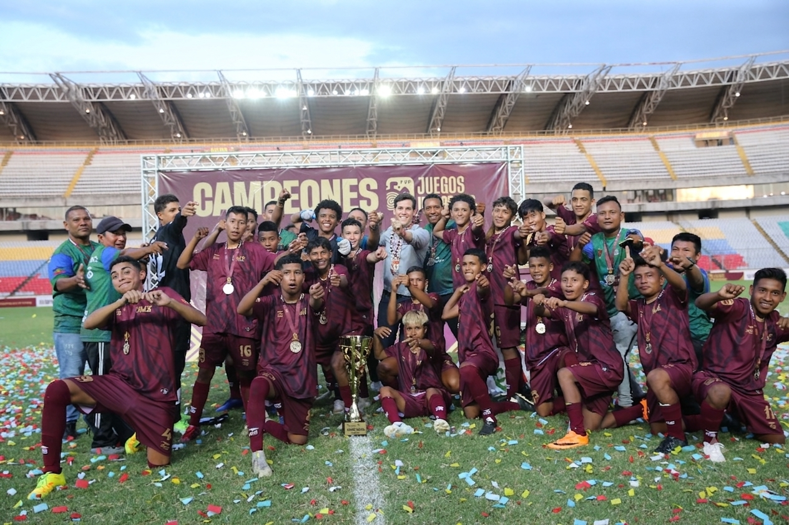

F·V·F
·
FEDERACIÓN VENEZOLANA DE FÚTBOL
·
ARCHIVO HISTÓRICO
·
SALA VINOTINTO
·
EXPOSICIÓN PERMANENTE
·
PIEZAS ÚNICAS
·
F·V·F
N° DE CATÁLOGO
FVF/MV/2026-B
§
Federación Venezolana de Fútbol
§
Mural
Vinotinto
◆
Recuerdos deportivos — pared 2
PISO 20
MURAL B
ii.
Doce láminas — secuencias 2/2
N° 01
N° 02
N° 03
N° 04
PRENDA
N° 05
N° 06
N° 11

N° 10
N° 08
PRENDA
N° 13
N° 09
SECUENCIA · 1
N° 12
SECUENCIA · 2
N° 14
N° 07
PRENDA
×
‹
›